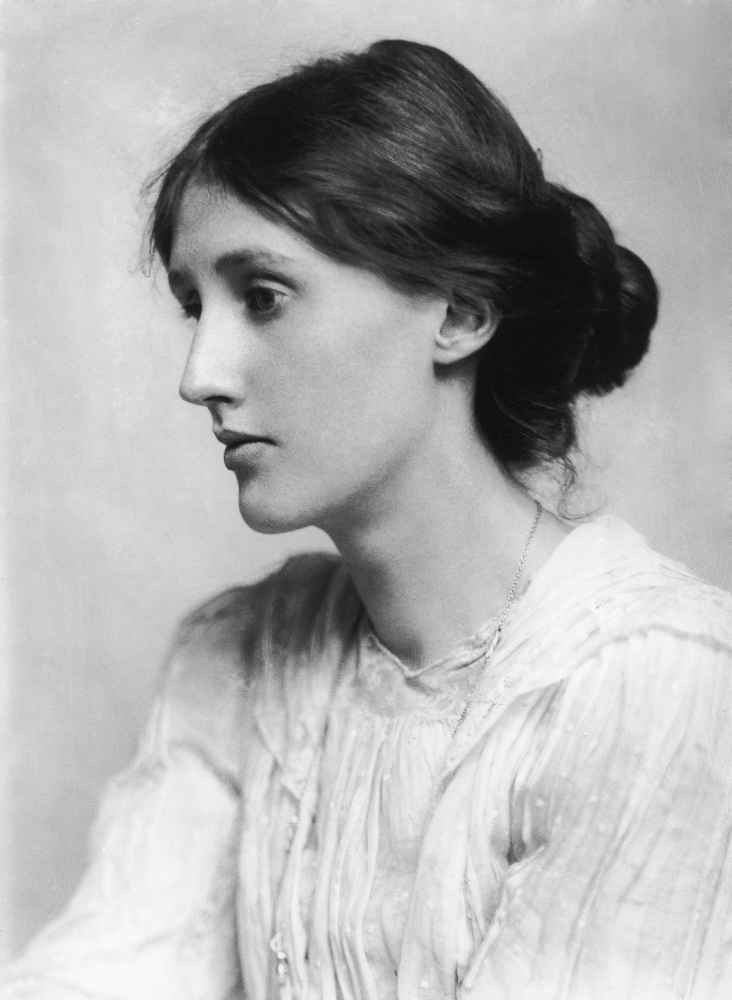
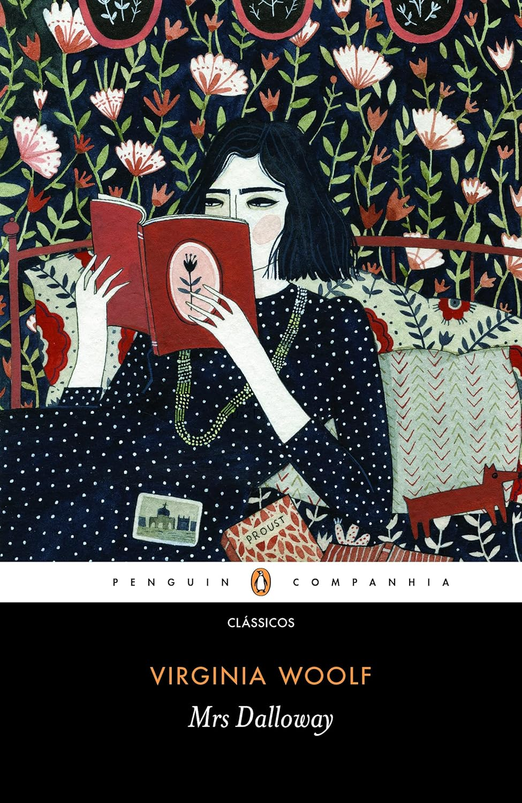

Figura destacada do modernismo literário do século XX e pioneira do feminismo, a autora britânica, cheia de depressões, viveu através da sua obra.
Leia mais em: Wagner Moura estrela adaptação de Virginia Woolf em novo projeto

A vida de Virginia Woolf, que sempre se orgulhou de ser autodidata, pode ser resumida através de uma das suas obras: A Viagem (The Voyage Out). Escrito 26 anos antes de ela morrer, demorou oito para ser publicado, mas pode ser definido como o livro sobre a vida da sua vida. Nele, a reconhecida autora britânica reflete sobre suas preocupações – as pessoais e as do momento social que lhe coube viver no começo do século XX –, suas paixões e suas insônias, e inclusive guarda semelhanças com ela no final prematuro da protagonista do livro, que também acabou sendo premonitório, com uma carta com palavras de despedida similares. E tudo isso com um estilo literário em constante experimentação, procurando sempre a identidade própria de personagens com grande sensibilidade e nostalgia.

Capa do livro "Mrs. Dalloway", Companhia das Letras | Penguin Companhia"